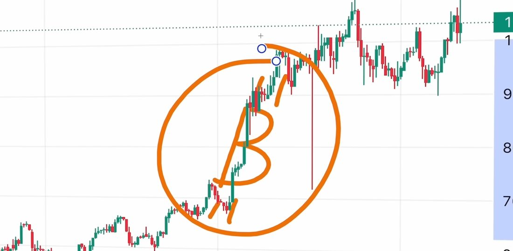
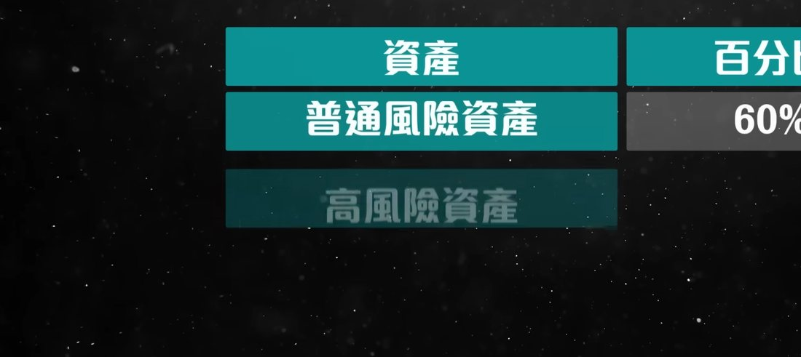
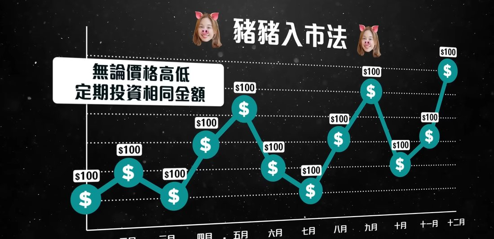
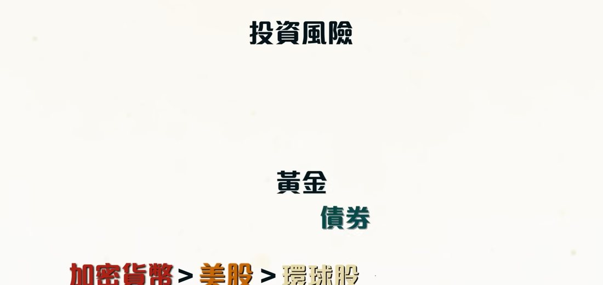
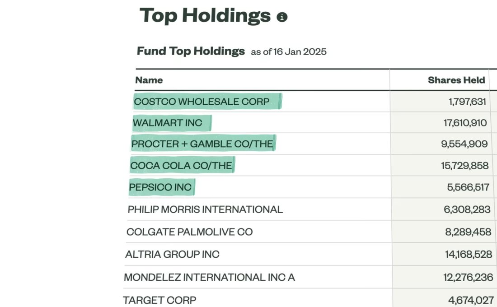
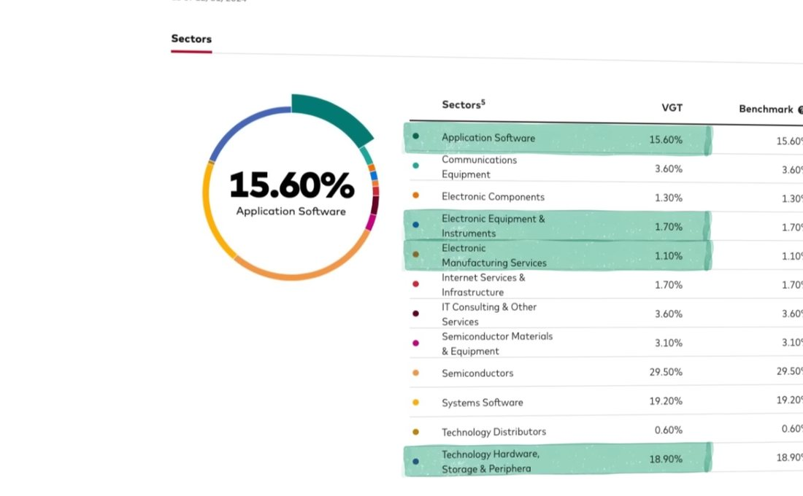
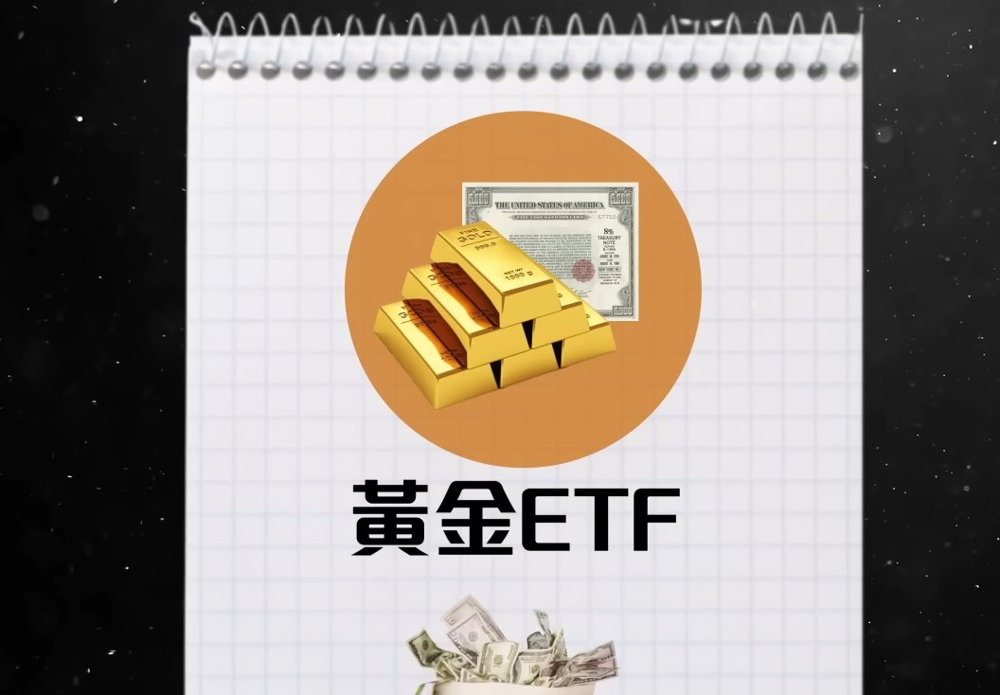

RainIsHere 用 17:20 的视频公开一套「新手也能做」的 2025 组合：从定额定期、再平衡，到五类资产和宏观假设。下面只按字幕记录步骤、比例与风险提醒，不构成投资建议。

适合谁：视频说的是投资新手，或太忙没时间看市的人；核心是先定下系统，再按个人需要调整00:01:1000:01:20。
不适合谁：想照抄代码、靠一条 15 分钟视频就冲进市场的人。视频自己也提醒要保持独立思考、自己做功课00:13:4000:13:50。
视频里没说：你的现金流、负债、税务、交易成本和所在市场的合规要求。下面的比例和代号都是视频说法，不是给你的个性化方案。
先把「什么时候投、投多少、买哪类」写死。视频说有系统投资，就是年初已计划好投资金额和要买的资产00:01:55。
视频把组合称为「分散风险」，不是投资比赛；它明确说 All in 一只股票可能赢过这个组合，但那不是同一件事00:14:0000:14:10。
| 情况 | 视频给的比例 | 你要先回答的问题 |
|---|---|---|
| 20 岁、健康、自认风险承受高 | 高风险 80%，低风险 20%00:06:1000:06:15 | 真的是「年纪轻就能承受无限风险」吗？视频后面也否定了这个绝对说法00:16:10。 |
| 中年、保守、少量风险 | 50% / 50%00:06:2000:06:25 | 能否接受账面波动，而不是只看长期年化？ |
| 老年、不能承受风险 | 低风险 80%00:06:3000:06:35 | 视频同时说老人也不一定不能碰风险资产，仍要看个人情况00:16:15。 |
| 视频 2025 中年普通风险版 | 普通风险 60%、高风险 15%、防守型 25%00:13:0500:13:15 | 视频是基于减息与通胀预期手动调整了债券和部分工具比例00:06:4500:08:10。 |

公式只是起点。视频说「100 减年龄」后，还要看健康、时间、风险承受能力和财力背景00:06:0500:16:20。
DCA 在视频里叫「定额定期投资」：每月指定日子、指定金额，按当时市价买目标 ETF00:02:2500:02:30。价格跌就买多一点，升就买少一点，但投入金额不变00:02:35。

视频说这个方法的好处是不用晚上盯市场，牛市买、股灾也买；它给的时间框架是 5 年，不少于 3 年00:02:4500:02:5000:03:00。
视频还举了 VOO 的例子：5 年前开始买的回报是 80%00:03:0500:03:10。这是历史例子，不是未来承诺；视频自己也不建议只凭一年回报做决定00:03:20。
视频说人容易 Buy High、Sell Low，所以要用再平衡做买卖决定：资产涨得过高、过急时卖出部分，再用资金买入相对便宜的资产00:03:5500:04:0500:04:10。
视频举的例子是：刚过去的 12 月美股创新高，于是卖出部分；当时债券价格下跌，于是把那部分钱看作买债时机00:04:3000:04:35。
复盘频率写在步骤里：每几个月或每半年看一次组合，再决定买或卖00:04:1500:04:25。视频里提到的 AI 再平衡计算器属于它的课程页面，本文不提供入口。
视频列的 5 类工具是：美股、环球股票、债券、黄金、加密货币，并说都放在低成本 ETF 里；五类风险程度不同00:05:4000:05:5000:05:55。

下表只记录视频里提到的工具、作用和数值，不把它们写成推荐。字幕没逐一说出的占比，本文不补。
| 视频分层 | 字幕提到的工具与作用 | 字幕里的数值 / 限定 |
|---|---|---|
| 普通风险 | VOO 对应 S&P 500；QQQ 对应 Nasdaq 100；ESGU 追踪超过 280 间符合环境社会责任的美国公司；HDV 追踪美国 75 只大型高息股；XLP 是必需消费品行业 ETF00:08:3000:08:4500:09:0000:09:20 | VOO 占 25%、QQQ 占 22%；HDV 利率 3.7%；ESGU 上年回报 24%00:09:3500:09:4000:09:1500:08:55 |
| 高风险 | VUG 偏大型成长股；VGT 覆盖美国科技、AI、机械人、生物科技、太空等；SMH 追踪 25 大半导体公司；另加比特币和以太币00:09:5000:10:0000:10:2500:11:00 | VUG 5 年平均 18%、VGT 5 年平均 21%、SMH 平均 PE 约 40 倍、5 年年化 28%00:10:0000:10:2000:10:4500:11:00 |
| 防守型 | 黄金用于保值和平衡风险；VGSH 专门追踪美国 1–3 年短期国债00:11:3500:12:30 | GLD 管理费 0.4%；VGSH 债息 4.3%、平均到期日 2 年00:12:1000:12:3500:12:40 |


视频特别提醒：半导体是周期性产业，只适合在周期内持有，不能长期持有不卖；加密货币属极高风险工具，只可用闲钱，不信就不要投00:10:5000:11:1500:11:25。
视频说黄金用于保值、平衡风险。实物金的好处是防美元和货币贬值、去中心化；如果不需要去中心化，可以考虑黄金 ETF，由管理人买并保存实体黄金00:11:3500:11:4500:11:5500:12:05。

视频拿 GLD 的 0.4% 管理费，和实物金自己保存的成本作对照；这不等于说哪种一定更便宜，只是它给出的比较口径00:12:1000:12:20。
债券方面，视频说 VGSH 成交量较大、流动性较高，加入是为了固定收益和平衡风险；但它不会让资产大幅增长，风险相对较低00:12:4500:12:5000:12:55。
| 坑 | 怎么避 |
|---|---|
| 抄一年回报最高的代码 | 视频用 Palantir 的例子说明：2023 年大跌、2024 年涨 316%，所以要从系统出发00:01:3500:01:4000:01:45 |
| 只看五年、三年或一年回报 | 视频说要用长期投资时间框架看整体资产回報00:03:2000:03:25 |
| 把「跌就入、升就放」当纪律 | 人容易感情用事；视频给的纪律是定期再平衡00:03:5000:04:05 |
| 把年龄公式当硬性规定 | 视频后面说 20 岁不等于无限风险，老人也不等于不能碰风险资产00:16:1000:16:15 |
| 把加密货币当稳健配置 | 字幕说它是极高风险工具，只可用闲钱；不信就不要投00:11:1500:11:25 |
| 把半导体当永久持有 | 字幕说它是周期性产业，适合周期内持有00:10:5000:10:55 |
| 忽略宏观预测的不确定性 | 联储局官员对减息次数有 1 次和 5 次两种看法，通胀预测 2.5%00:07:2000:07:35 |
| 把组合当比赛 | 视频说它不是投资比赛，目标是为自己定制合适组合00:14:0000:14:35 |
「每月 3000，8 年、年回报 10% 就够退休」00:00:0000:00:05：视频随后解释 10% 指股市长期平均年回报率00:01:00；这仍是演示假设，本文不把它当承诺。
「人人都可以做到退休有钱花」00:01:05：字幕里的判断，未给个人收支、税务和市场条件；本文不下结论。
「比特币和以太币用来去中心化、对冲去美元化风险」00:11:0000:11:05：这是视频给的目的，不是已验证的对冲效果。
课程、券商开户链接和优惠00:05:1500:15:2500:17:00：视频多次提到自家课程、计算器和开户链接，本文只记录出现事实，不推广、不替读者决定。